Il Romanico
1. Cronologia
2. Contesto storico e sociale
Il Medioevo (476–1492) si divide in due fasi. La seconda, dall'anno Mille, è segnata da crescita economica, demografica e urbana. Le città rifioriscono, nascono le attività artigianali e una nuova classe sociale legata al commercio.
Il potere è in mano a papa e imperatore; la società si regge sul vassallaggio. I monaci (benedettini, cluniacensi, cistercensi) sono custodi della cultura: copiano i manoscritti negli scriptoria, decorandoli con miniature.
L'Italia non è un paese unito: la frammentazione politica e le diverse influenze culturali (romano-barbariche, bizantine, arabe, normanne) producono varianti regionali molto diverse tra loro.
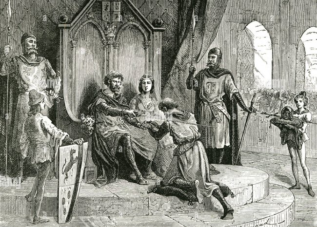
3. La chiesa romanica — caratteri generali
Edifici dall'aspetto severo e monumentale, muri massicci, piccole finestre. Si ispirano all'architettura paleocristiana ma introducono importanti innovazioni.
Pianta e struttura
- Pianta longitudinale a croce latina (transetto con bracci disuguali)
- Interno diviso in tre o più navate; la centrale è la più ampia
- Presbiterio sopraelevato, con sotto la cripta (reliquie e sepolture)
- Matroneo sopra le navate laterali (galleria per le donne)
- Coro nell'abside per cantori e ecclesiastici
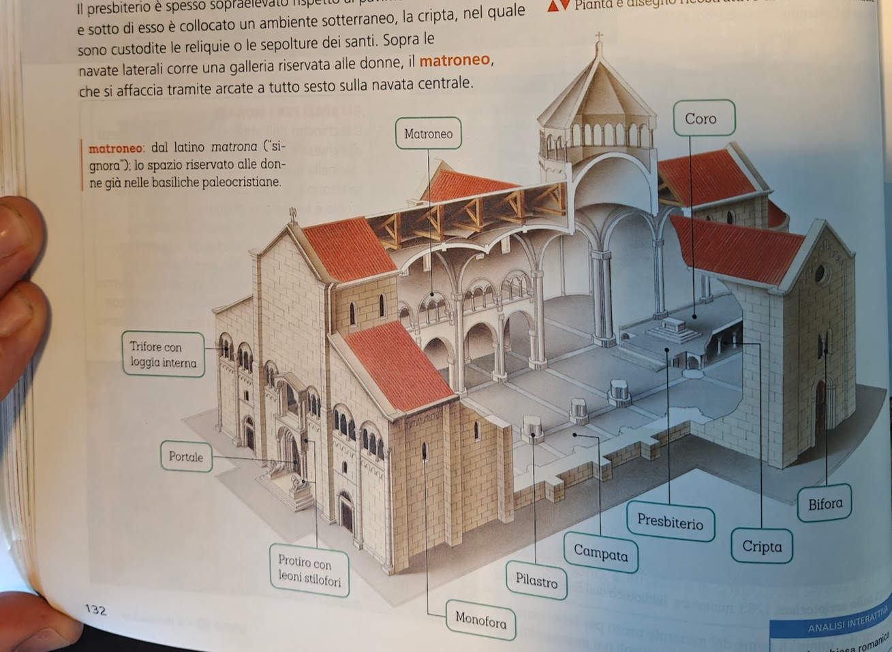
Coperture
- Volta a crociera: due archi che si incrociano → 4 vele, rinforzate da costoloni
- Il peso scarica su 4 pilastri agli angoli
- Lo spazio tra i pilastri = una campata
Facciate
- A capanna: profilo a triangolo (es. Duomo di Parma)
- A salienti: mostra le diverse altezze delle navate (es. San Miniato al Monte, Firenze)
- Finestre: monofore (1 apertura), bifore (2), trifore (3)
- Protiro: portico sul portale, con colonnine su leoni stilofori
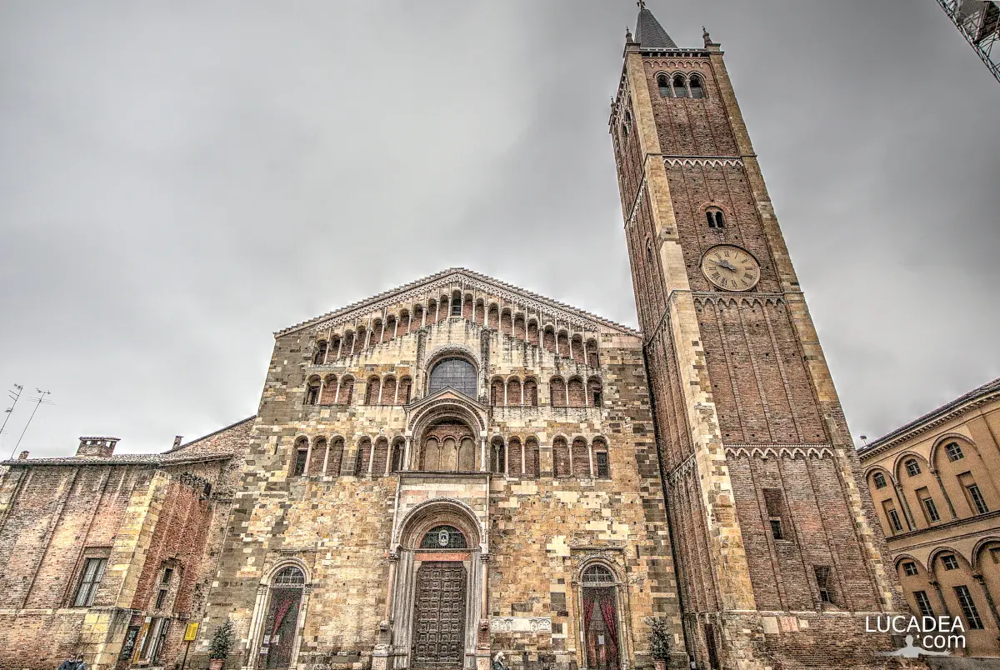
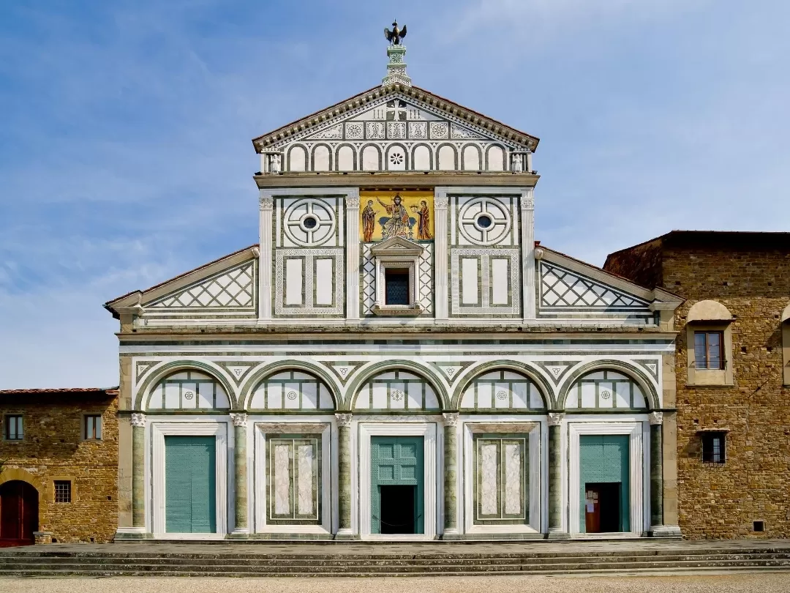
4. Varianti regionali in Italia
Romanico lombardo
Decorazione murale con rientranze e sporgenze per creare effetti di chiaroscuro. Tipici gli archetti decorativi (ciechi o su colonnine). Portali strombati. Esempio: Basilica di San Michele, Pavia (terminata 1155).
Romanico fiorentino
Forte continuità con l'architettura classica (archi a tutto sesto, capitelli, cornici). Decorazione geometrica con pietre di diversi colori (bianco e verde). Esempio: Battistero di San Giovanni, Firenze — pianta ottagonale.
Romanico pugliese
Mescola influenze bizantine, arabe e normanne. Aspetto possente e severo. Esempio: Cattedrale di San Nicola, Bari (1087–1197) — facciata a salienti tripartita, due massicce torri di impronta normanna, protiro con buoi stilofori.
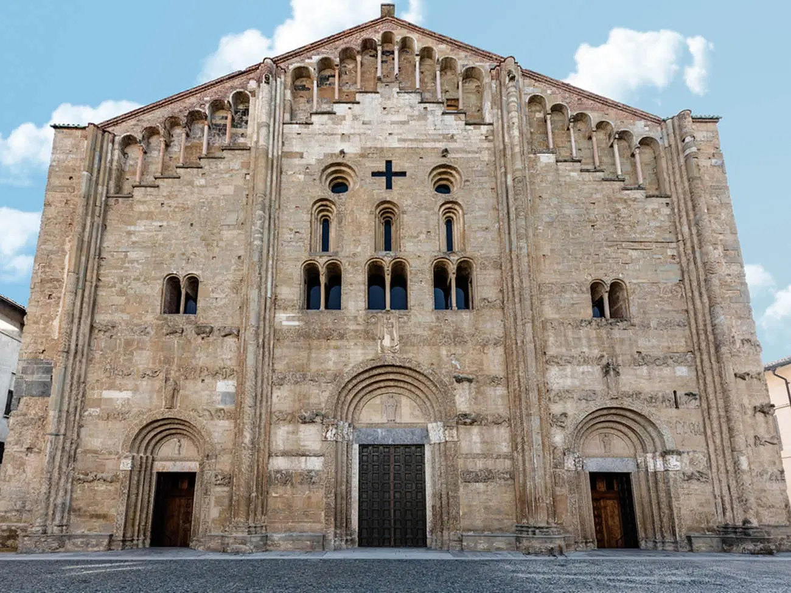

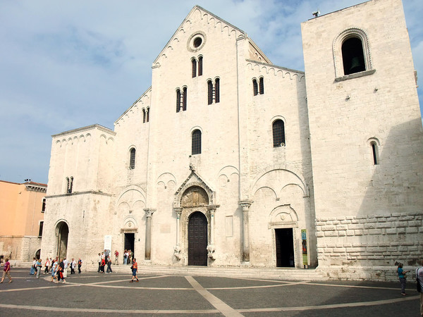
5. Le opere principali
Basilica di Sant'Ambrogio — Milano
- Originariamente fatta costruire dal vescovo Ambrogio (IV sec.) per custodire le reliquie dei martiri Gervasio e Protasio
- Rifatta in forme romaniche dall'XI sec.
- Si accede attraverso un quadriportico con archi a tutto sesto
- Facciata a capanna con due loggiati sovrapposti
- Interno: spazio longitudinale e proporzionato; volte a crociera (5m navate laterali, 10m navata centrale)
- Pilastri compositi (più supporti verticali uniti)
- Cripta sotto il presbiterio sopraelevato; matroneo sopra le navate laterali
- Significato: modello per molte chiese successive; prima grande applicazione delle volte a crociera

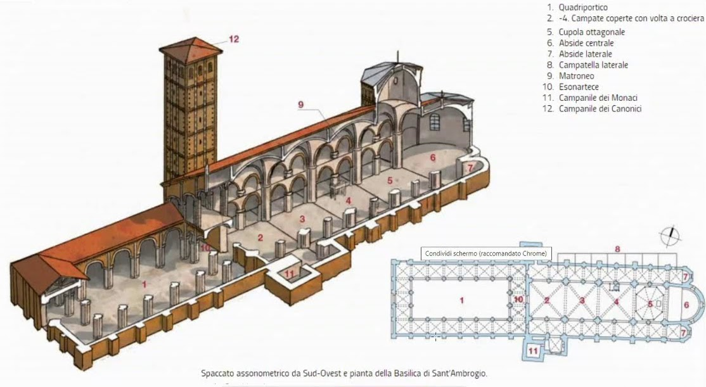
Duomo di Modena (Cattedrale di San Geminiano)
- Dedicato a san Geminiano, vescovo e patrono; spoglie trasferite nel 1106
- Lanfranco (architetto) e Wiligelmo (scultore): tra i primi "maestri" noti per nome, ricordati da iscrizioni murate sulla chiesa
- Interno: tre navate, colonne alternate a pilastri, tre livelli in altezza (arcate, matroneo con trifore, finestre alte)
- Aspetto austero ed essenziale — mattoni a faccia vista
- Facciata a salienti con protiro (leoni stilofori), triplici archetti, rosone aggiunto dopo (gotico)
- 4 lastre scolpite da Wiligelmo sulla facciata: episodi dalla Genesi (creazione → Diluvio universale) — vedi sezione scultura
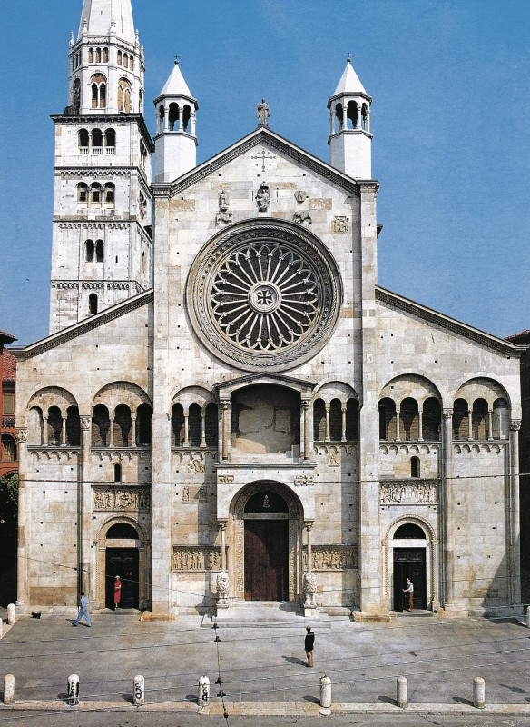
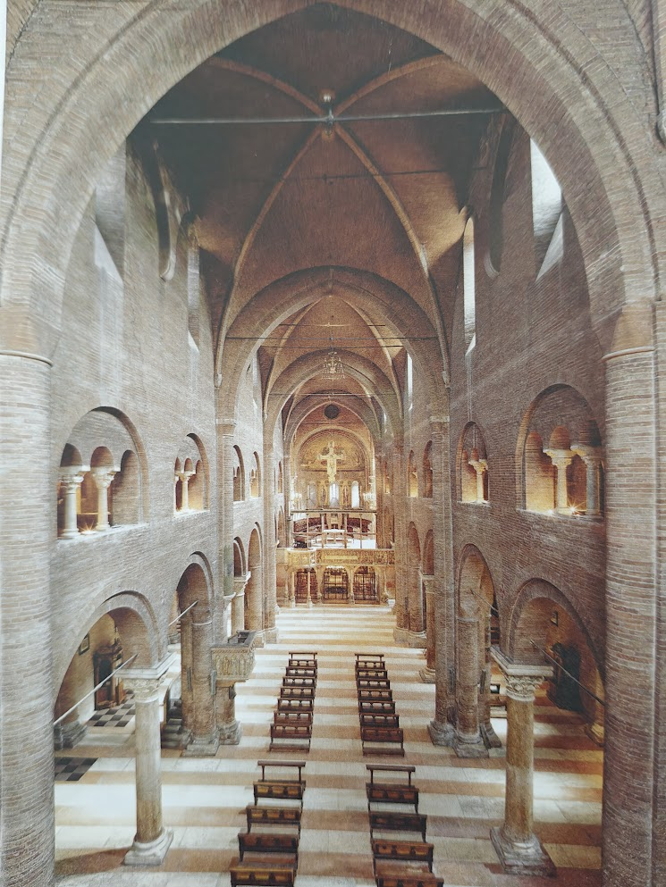
Piazza del Duomo — Pisa
- Pisa era potenza marittima, commerciale e militare; il complesso celebra il potere della città (costruito anche grazie al bottino di guerre contro gli Arabi)
- Complesso formato da 4 edifici: Cattedrale, Battistero (dal 1118), Campanile (Torre pendente), Camposanto (dal Trecento)
- Accompagnava il cristiano in ogni fase della vita: battesimo → preghiera → morte e sepoltura
- Duomo: facciata di Buscheto e Rainaldo, stile romanico pisano, quattro livelli di logge con arcatelle, gioco di chiaroscuro
- Torre pendente: pianta circolare, 57 metri, inclinazione causata dal terreno cedevole; lavori di consolidamento 1990–2001
- Contrasto tra pietra chiara e manto erboso verde

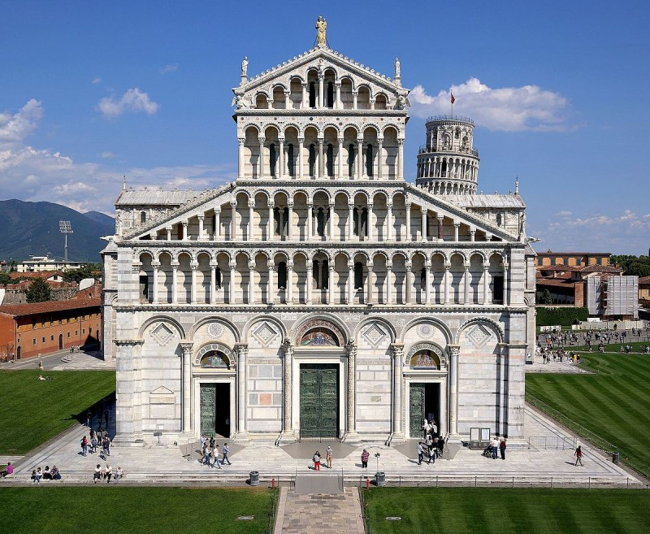
Basilica di San Marco — Venezia
- Costruita per custodire le reliquie di san Marco, sottratte ad Alessandria d'Egitto da due mercanti veneziani nell'828
- Costruita e ricostruita più volte; la forma attuale iniziata nel 1063, consacrata nel 1094
- Pianta a croce greca (bracci uguali), cinque cupole a bulbo di gusto orientale
- Fortissima influenza dell'arte bizantina
- Esterno: aspetto originario in mattoni oggi coperto da rivestimenti marmorei, sculture e mosaici aggiunti dal Duecento
- Interno: pareti, soffitti e cupole interamente rivestiti di mosaici dorati → spazio unitario e luminoso, quasi annulla gli spigoli
- Simbolo di Venezia, centro della vita pubblica e religiosa: elezioni del doge, ricorrenze civiche e religiose
- Minaccia: acqua alta e surriscaldamento climatico danneggiano mosaici, pavimenti e pareti (alluvione novembre 2019)
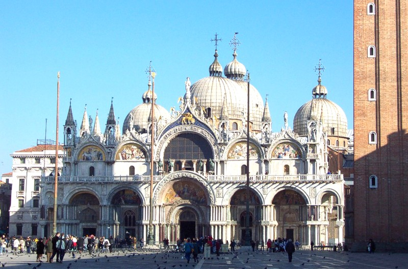
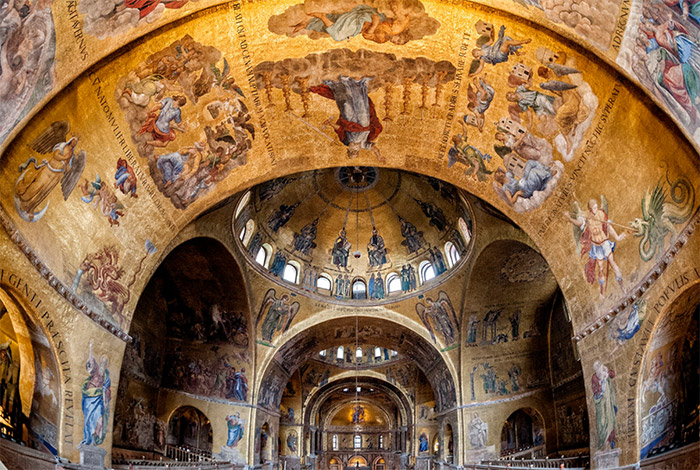
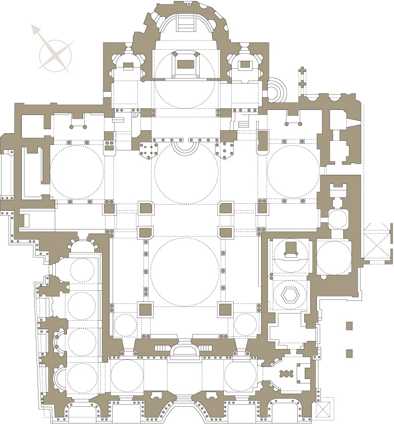
6. La scultura romanica
Scultura e architettura sono strettamente legate. Le sculture decorano gli edifici nei punti più visibili (portali, capitelli, facciate) con funzione didattica: istruire i fedeli, ricordare la lotta tra bene e male. Tecniche principali: bassorilievo e altorilievo.
I portali
Il portale segna il confine tra mondo esterno (peccato) e spazio sacro. Le sculture nella lunetta esortano i fedeli. Esempio: portale di Sainte-Madeleine a Vézelay (Francia, 1120–1135) — Cristo affida agli apostoli il compito di diffondere il Vangelo; è raffigurato il doppio delle altre figure per indicare la sua importanza.
I capitelli
Nel Romanico il capitello non segue più gli ordini classici: diventa superficie per scene sacre e simboliche. Esempi: Adamo ed Eva (Antelami, Parma); sirene e mostri (cripta del Duomo di Modena) che ammoniscono contro la doppiezza e la falsità.
Scene di vita quotidiana
Anche la vita terrena rimanda a Dio: i "cicli dei mesi" raffigurano le attività agricole di ogni mese. Esempio: Mese di settembre di Antelami (Battistero di Parma) — vendemmia con contadino e bilancia (segno zodiacale).
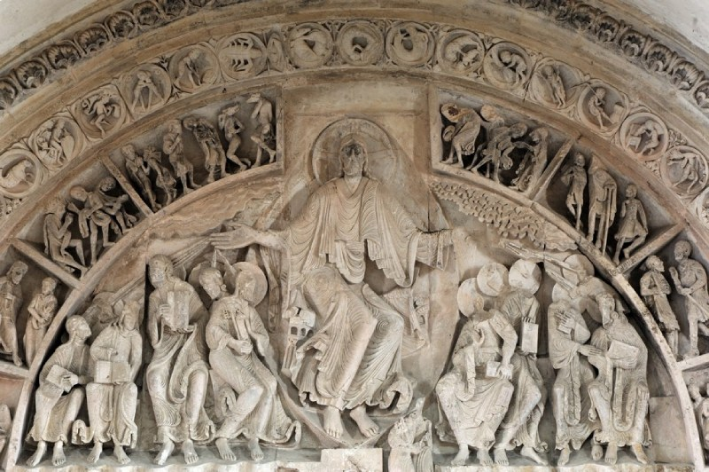
Wiligelmo — Lastre della Genesi
- 4 lastre sulla facciata del Duomo: dalla Creazione al Diluvio universale
- Lastra della Creazione: Dio in una mandorla retta da angeli → creazione di Adamo → Eva nasce dal corpo di Adamo → Adamo ed Eva davanti all'albero con il serpente
- Corpi massicci ma con senso di spazio tridimensionale
- I gesti esprimono con immediatezza la trama del racconto
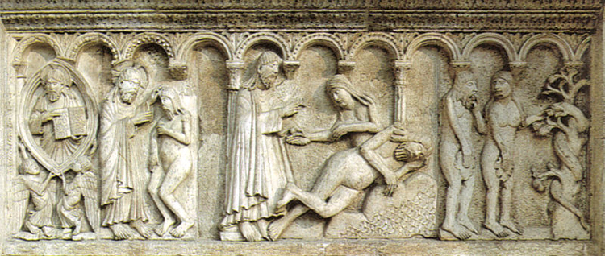
Benedetto Antelami — Deposizione di Cristo dalla croce
- Composizione ordinata e simmetrica; la croce al centro divide la scena in due gruppi
- A sinistra (i credenti): Giuseppe d'Arimatea e Nicodemo staccano il corpo; Madonna che sfiora la mano del figlio; san Giovanni e tre donne; arcangelo Gabriele; personificazione del Sole (luce divina)
- A destra (i non credenti): la Sinagoga (religione ebraica) costretta a chinare il capo; centurione romano; soldati che si giocano a dadi la veste di Gesù; personificazione della Luna (tenebre e male)
- Pose rigide ma espressioni intense; composizione movimentata che suggerisce profondità
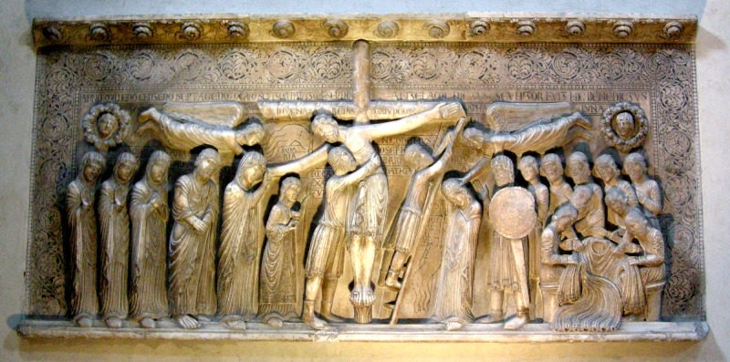
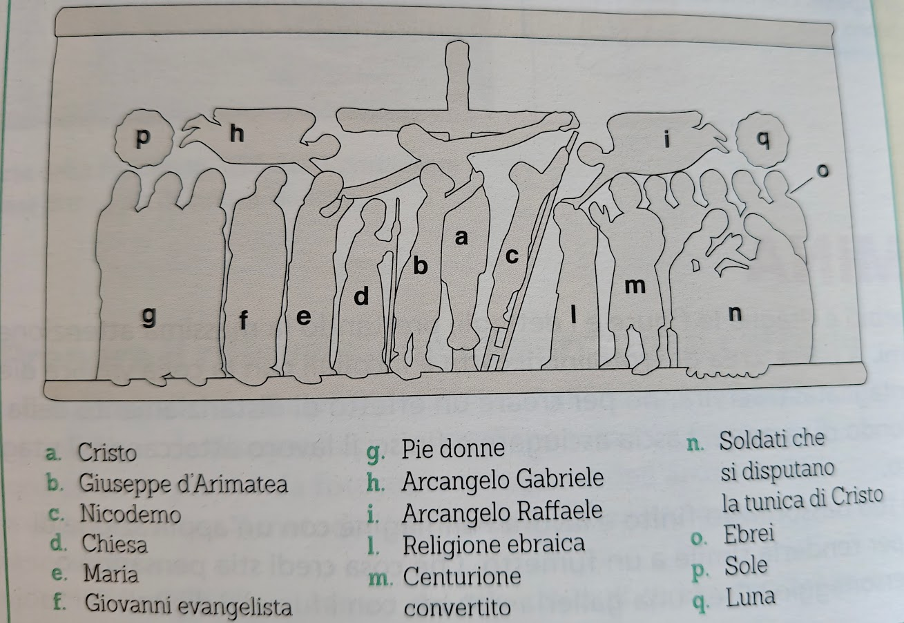